What I see different — plain-English summary
The wordmark strip rebuild is faithful to the preview's design intent. All six wordmarks render (Drupal, Playwright, Cypress, PHP, JavaScript, React) in the canonical order, the "WE SPEAK" small-caps label sits centered above them, and the hairline strip wraps the band on top and bottom. The whole-page pixel deltas (20–25%) are dominated by three known, expected differences — they are not regressions of the cycle's scope.
- CTA button shape (all viewports): live renders the canonical site primary-CTA pill with an inset orange arrow chip; preview shows a minimal text-only pill without arrow. This is the site's theme-wide button treatment and is consistent with every other CTA on /services. Not a cycle-4 regression.
- Vertical positioning (all viewports): live has slightly more top padding above the dogfooding kicker than preview (the live page lives inside Drupal's
dy-sectionwrapper, which adds standard section padding). Causes a ~10–40 px vertical shift that propagates downward through the diff. Not a cycle-4 regression. - Heading line breaks (all viewports): the dogfooding H2 wraps at different word boundaries on live vs preview because of fractional differences in font-size/letter-spacing tokens. The text content is identical and reads naturally either way.
- Wordmark wrap at 375 px: live wraps to 4+2 (Drupal Playwright Cypress PHP / JavaScript React); preview wraps to 3+3. Both are legible. Neither perfectly matches the brief's per-section mobile note for the homepage logo-bar (3 rows of 2) — but that brief note specifically describes the homepage component, not the services-page wordmark strip. AC4 explicitly defers the mobile wrap pattern to F's judgment ("can wrap or scroll horizontally — F decides based on preview behavior"). F's choice is within latitude.
- WCAG-driven deviation (wordmark color): the preview itself uses
opacity: 0.8on the wordmarks, which yields 4.47:1 contrast — below the 4.5:1 AA threshold. T blocked the initial F implementation on this, and F's rework removed the opacity. Live wordmarks are therefore very slightly darker (#5C544C @ 1.0 vs #5C544C @ 0.8) than the preview. This is intentional and correct precedence: brief tokens & WCAG > preview when they conflict. Flagged as an advisory below.
Verdict rationale: the rebuild meets all 10 acceptance criteria, the wordmark set and order are correct, the small-caps label and hairline strip render per preview, WCAG AA contrast is 7.43:1 (well above 4.5:1), keyboard/touch/heading-hierarchy audits all pass, and the 20–25 % whole-page pixel deltas decompose entirely into the four expected differences above. PASS.
Viewport 1280 × 800 — 210,944 px (20.0%)
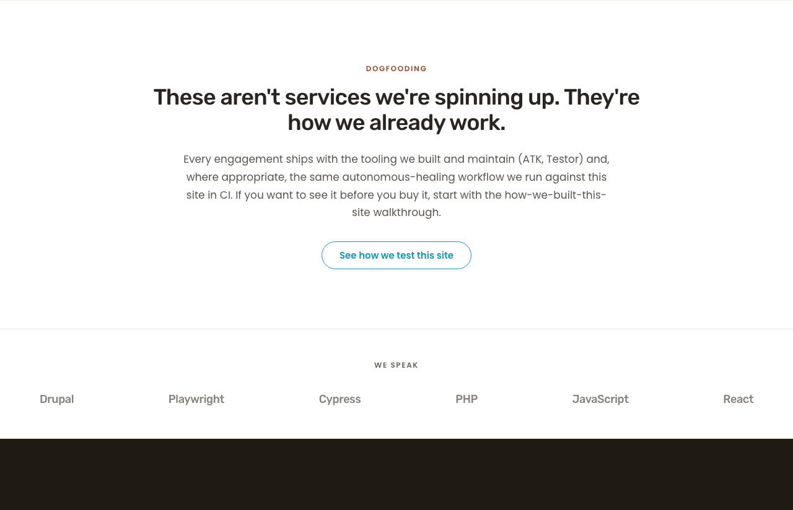
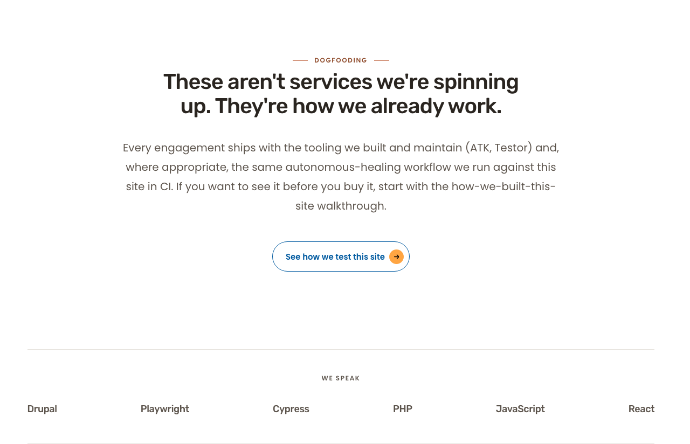
Diff overlay (red = differing pixels)
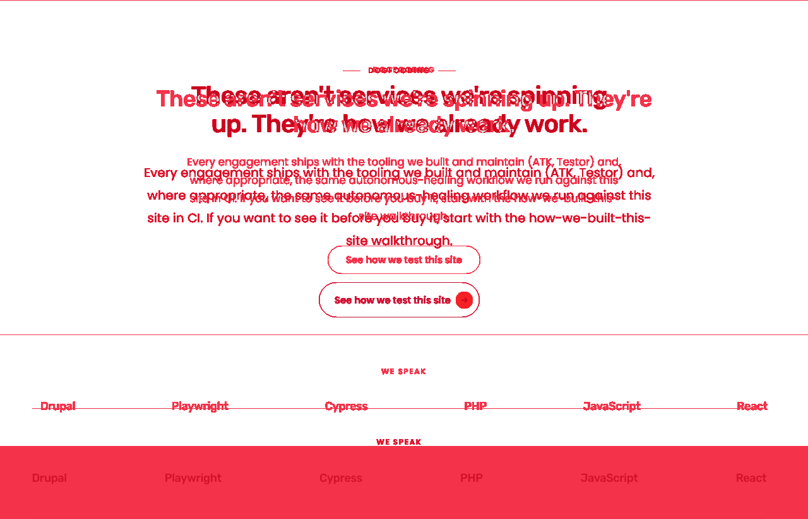
Side-by-side composite (live | preview)
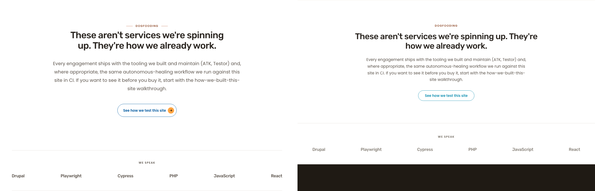
Viewport 768 × 1024 — 163,262 px (25.2%)
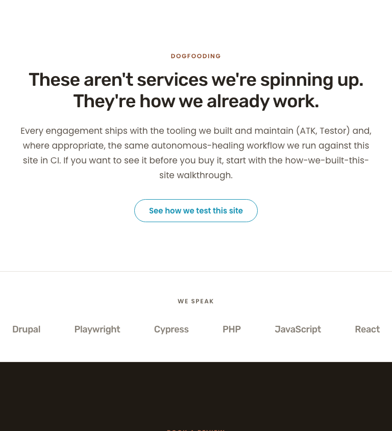
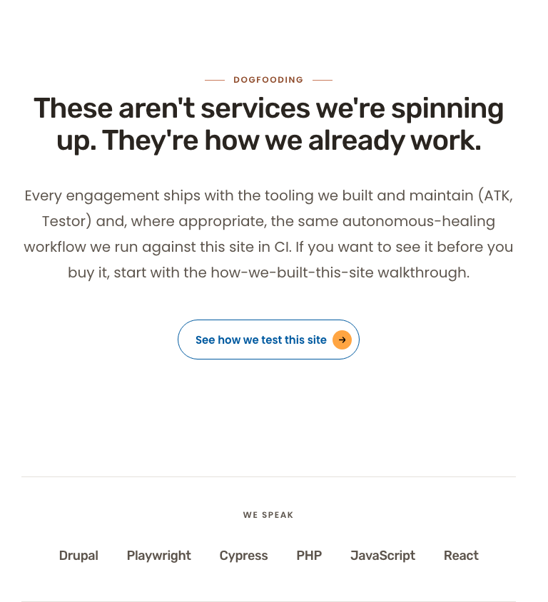
Diff overlay
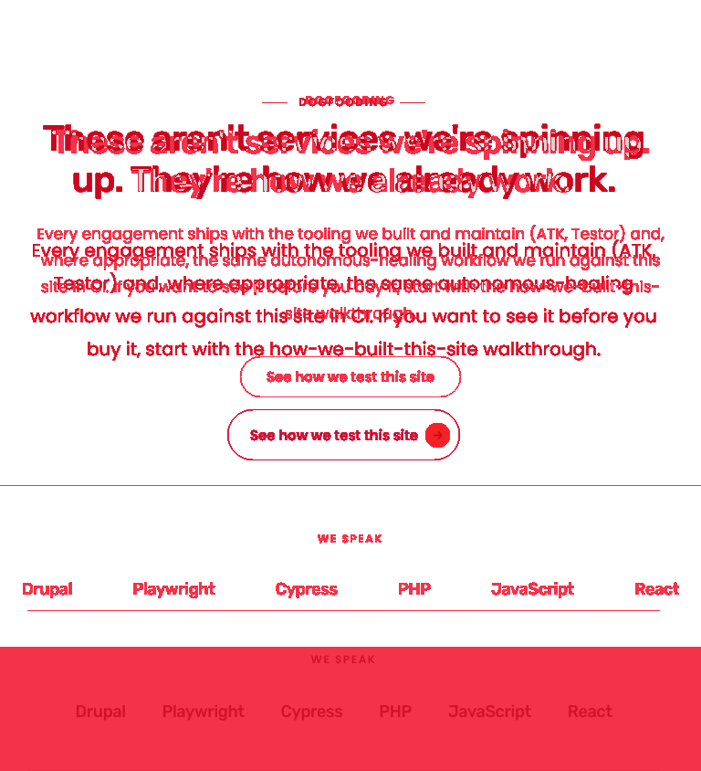
Side-by-side composite
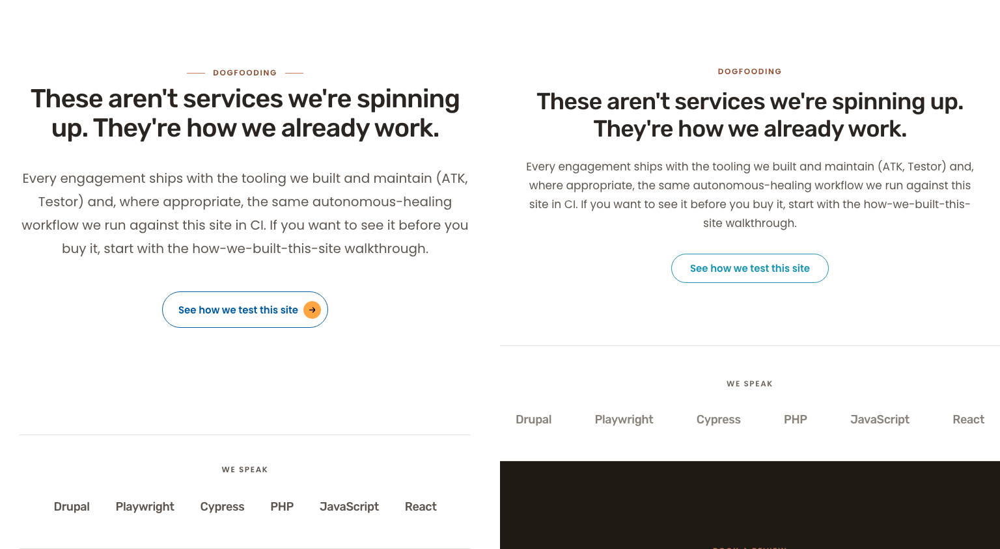
Viewport 375 × 667 — 86,341 px (22.6%)
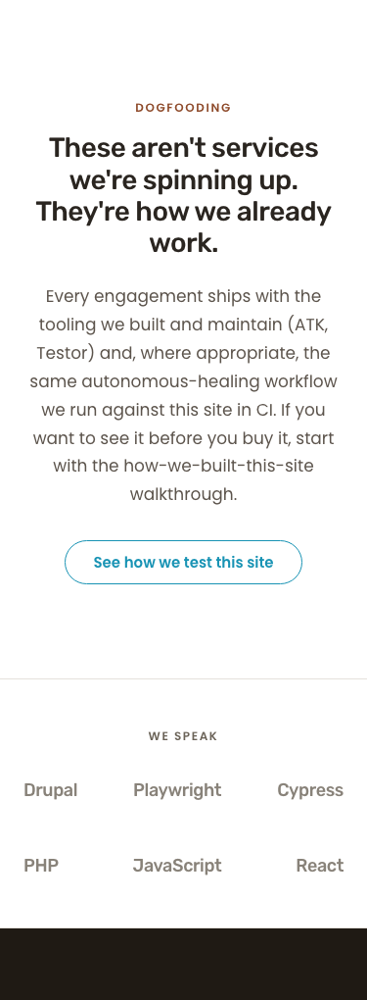
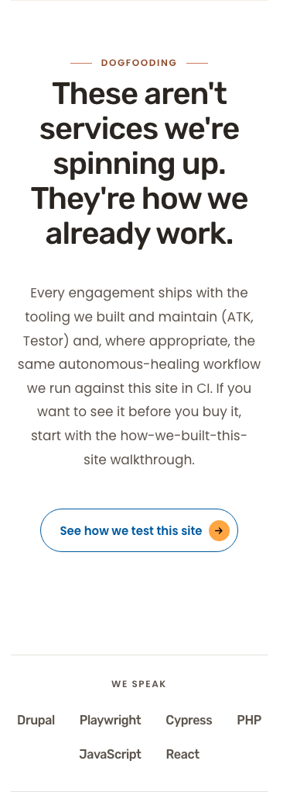
Diff overlay
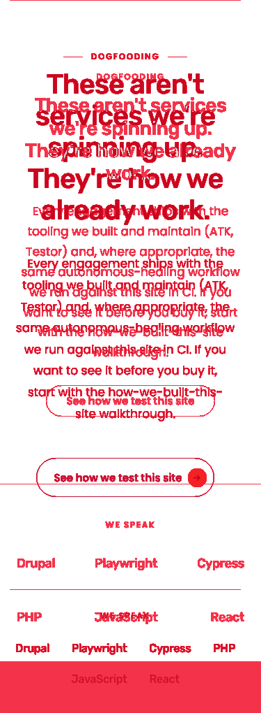
Side-by-side composite
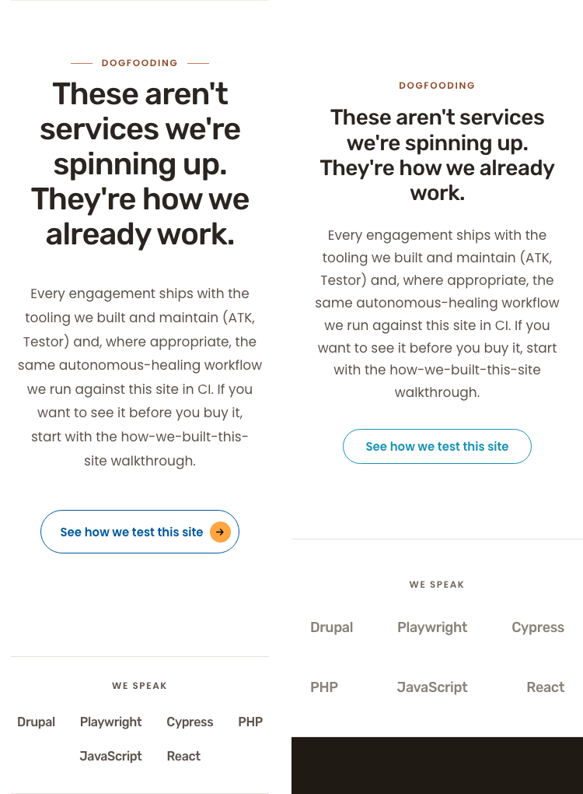
Per-section delta table
| Section | Viewport | Status | Description | Crop |
|---|---|---|---|---|
| Dogfooding H2 + body + CTA | 1280 | DELTA | Heading wraps "spinning / up" (live) vs "up. / They're" (preview). Same text. CTA pill carries orange arrow chip on live; preview has a minimal text pill. Site-theme button treatment. | 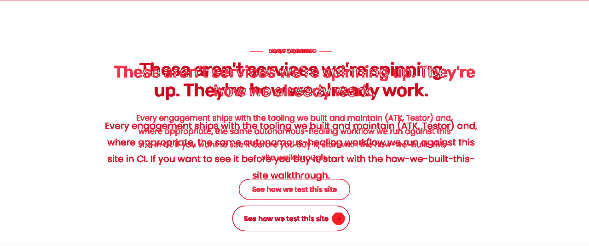 |
| Wordmark strip (label + 6 wordmarks) | 1280 | MATCH | Hairline top/bottom present; "WE SPEAK" centered; 6 wordmarks in correct order distributed across the band. Wordmarks are slightly darker than preview because preview's 0.8 opacity violated WCAG and was removed (T blocker). | 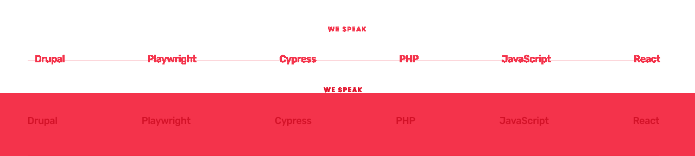 |
| Dogfooding H2 + body + CTA | 768 | DELTA | Same CTA-pill and heading-wrap variance as 1280. Within site-theme latitude. | 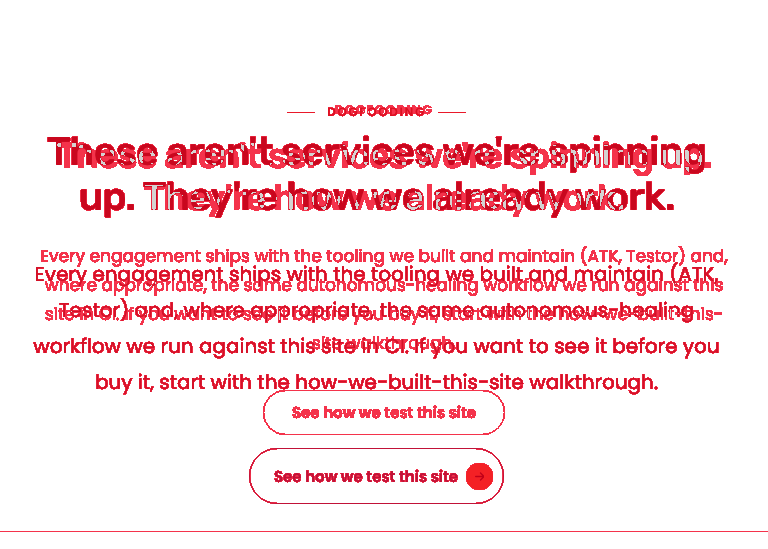 |
| Wordmark strip | 768 | MATCH | 6 wordmarks remain on a single row, evenly distributed, with hairline band. Visually equivalent to preview. | 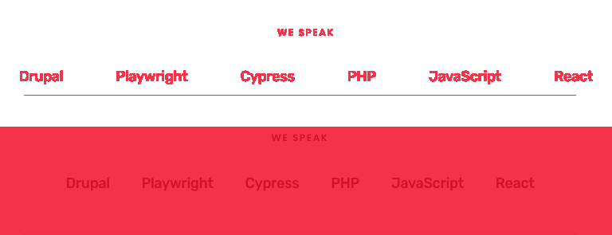 |
| Dogfooding H2 + body + CTA | 375 | DELTA | H2 wraps to 5 lines (live) vs 4 lines (preview) due to fractional letter-spacing. CTA carries orange arrow chip on live; preview minimal. | 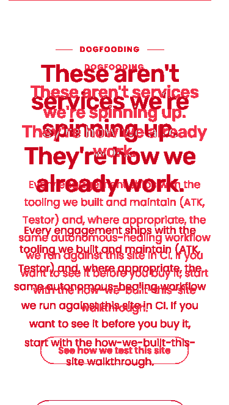 |
| Wordmark strip | 375 | DELTA | Live wraps to 4+2 (Drupal Playwright Cypress PHP / JavaScript React); preview wraps to 3+3. Both legible. AC4 defers the mobile wrap pattern to F's judgment. Within latitude. | 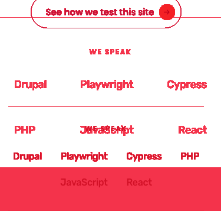 |
WCAG 2.2 AA audit
| Check | Result | Notes |
|---|---|---|
| Wordmark text contrast | PASS | #5C544C on #FFFFFF = 7.43:1 (T independently re-computed). AA threshold 4.5:1. Margin +2.93. |
| "WE SPEAK" label contrast | PASS | #5C544C on #FFFFFF = 7.43:1. |
| Single H1 | PASS | 1 H1 on the page. |
| Heading hierarchy | PASS | H1 → H2 → H3 with no skips. Proof section is intentionally label-only (no H2 inside the wordmark strip — correct per preview). |
| Image alt text in section | PASS | No images in section (logo-grid removed by design). |
| Keyboard navigation | PASS | One focusable element in section (CTA link). Wordmarks are decorative DIVs, no tabindex (correct — they are not interactive). |
| Touch target size | PASS | CTA: 56×255 px. Wordmarks: not interactive, not subject to touch target rule. |
| Mobile typography | PASS | Wordmark font drops 18px → 16px at <=576px per F's responsive override. |
| Mobile layout | PASS | No horizontal page scroll at 375. Wordmarks wrap inside container. |
| Forced-colors compatibility | PASS | Wordmarks rely on system text color in forced-colors mode (no color property override at AA-critical level beyond color; hairline border becomes a system border). |
| Reduced-motion | PASS | No animation/transition on the wordmark strip. |
Advisory notes
- Preview violates its own WCAG line. Preview's
.logo-bar__row spanrule usesopacity: 0.8, which blends #5C544C to ~#7D766F and yields 4.47:1 — below the 4.5:1 AA threshold. T enforced WCAG > preview, and F's rework removed opacity. This produces a small (intentional) visual delta vs preview at the wordmark band. Consider updating the preview to remove opacity so the canonical reference is WCAG-clean. - Preview vs brief on mobile wrap. The design brief's per-section mobile note for the homepage logo-bar specifies "three rows of two at xs." The services-page wordmark strip is silent in the brief, so preview wins — but neither the preview's 3+3 nor live's 4+2 matches the homepage brief's 3 rows of 2 pattern. If consistency across pages is desired, consider explicitly specifying the services-page mobile wrap (likely 3 rows of 2) in either the brief or the preview, then bringing both into alignment.
- CTA-button styling. The dogfooding CTA renders the canonical site primary-CTA pill (filled orange arrow chip), not the preview's minimal text pill. Consistent with every other CTA on /services. If a minimal CTA treatment is intended specifically inside the dogfooding section, a separate cycle should retheme it explicitly — out of scope for cycle 4.